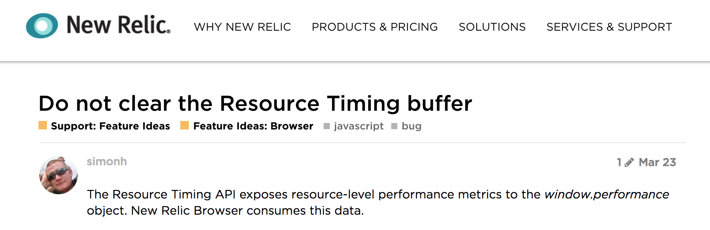

Third-Party Content
The weak link in your chain?
Simon Hearne - Principle Engineer @ Akamai
#perfmatters conf 2018
AKA
Bad people
doing horrible things
to good sites
The modern web workflow 101
make something 🤓
test it ğŸ‘
ship it 😎
...
put tags on it 😳
AMP got something right 🙄
What i've learned in 5 years
we seem to have less control than ever
The "business" 👩‍✈️
Tags serve business goals
- Measurement & Analytics
- Ads & Retargeting
- "Optimization" & Testing
- Comments & Live Chat
- Tag Management
The money 💵
“We know that Optimizely slows down the site, but it will get us $750k increased revenue this year”
Holiday website, UK
The it's not my job 🤷‍
“We suspect it slows the site down, we haven’t tested it. Marketing says it’s critical to their latest TV campaign so there’s no point arguing”
Budget airline, UK
The tag manager 🕴
“All the tags go through the tag manager, so they should be fine.”
Clicks-and-mortar store, UK
but what about the
Risk?
🎲
Availability Heuristic 101 🤔

Availability Heuristic 101 🤔
- Remember when Facebook went down?
- Remember when Disqus went down?
- Remember when Maxymiser went down?
- Remember when Dyn went down?
Risk 1:
Malicious code injection 👹
CryptoJacking

It happens to the biggest players

Internet 'Service' Providers
blog.ryankearney.com/2013/01/comcast-caught-intercepting-and-altering-your-web-traffic/
Content Delivery Networks

Unintentional data collection
website tracking is a "security disaster waiting to happen"
Risk 2:
Availability 📉
Do they fail gracefully?
ğŸ‘
Do they fail gracefully?
TODO: SPoF
ğŸ‘
Are they using a CDN?
Is it as good as yours?
TODO: e.g. optimix.asia on akamai
What is their SLA for availability?
Is it as good as yours?
TODO: are there any public slas?
Availability to the user
Government / geo blocking
Ad blocking
Tracker blocking
Random crap
Risk 3:
Code Quality ğŸ”
XSS Vulnerabilites

XSS Vulnerabilites
document.write("<div
class='vdb_player vdb_565ec775e4b092ebc9685ce853180f5de4b066208a63279a'
vdb_params='m.pub_id=606413&m.url=http://nypost.com/#1' - alert(1) - '-alert(1)-'>
</div>");
Different release schedules
<script src="//s7.addthis.com/addthis_widget.js" async></script>
How do you know when it changes?
Just plain thoughtless
discuss.newrelic.com/t/do-not-clear-the-resource-timing-buffer/
Risk 4:
Performance 🚀
Self-policing isn't good enough
... the X Web Reference Snippet was available ... and the download time over HTTP did not exceed 500 ms.
Snippet is sampled every minute from a variety of U.S. locations.
status.optimizely.com
Tools aren't equal
orangevalley.nl/en/blog/9-ab-testing-tools-compared-on-site-speed-impact/
The web is variable
TODO: distributions from HTTP archive?
The web is variable
(and so are third-parties
TODO: Analysis from lambda_rt here
Resource Timing to the rescue!

https://www.w3.org/TR/resource-timing-1/
Resource Timing to the rescue?

not without Timing-Allow-Origin 🙈
https://www.w3.org/TR/resource-timing-1/
Resource Timing won't save us
🙈 no redirect information
🙈 limited data on 72% of third-party content
🙈 only the first 150 requests *
🙈 no data on old iDevices
developer.akamai.com/blog/2017/07/26/measuring-performance-third-party-contributors/
* can be increased and cleared
Risk 4:
Performance 🚀
(for real this time)
CPU is our biggest bottleneck ⏳
Who's policing the third-parties?
TODO: CPU abuser
Variable CPU time
on synthetic agents!
The most frustrating perf bug, ever

Who watches the watchmen?
TODO: Boomerang perf analysis
Risk 4:
Performance 🚀
(part III)
delaying onload
TODO: replay optimix.asia example?
DNS isn't free
keeping the radio awake
We have little control over which are used
But there are things we can do...
Stage 1:
Find out what's there
Synthetic Testing (webpagetest)

Synthetic Testing (webpagetest)
Request Maps
github.com/simonhearne/requestmap/ | requestmap.webperf.tools
Request Maps
github.com/simonhearne/requestmap/ | requestmap.webperf.tools
Bonus: Third-party categorization
github.com/simonhearne/thirdpartydb | thirdpartydb.appspot.com
Real User Monitoring 1 🥃
Akamai mPulse
Stage 2:
Determine the impact
Synthetic Testing (webpagetest)

Synthetic Testing (made easy)
Synthetic Testing (made easy)
Resource Impact from Synthetics 🤖

#datavis brought to you by Catchpoint!
Resource Impact from RUM
Advertising Partners
Partner 1 = ~400ms slower than partner 2
Migrating all ads = 220ms faster page load
Additional revenue ~= $12,000 per month
Large US publishing company
Analytics
TODO: add RIS results for analytics
Multivariate Testing / 'Optimization'
TODO: add RIS results for optimizely
LongTasks API
TODO: long tasks info
Bonus: determine the value!

"Everything should have a value,
because everything has a cost"
Tim Kadlec - freelance #webperf god
Stage 3:
Measure them and Report on them
Content Security Policy 👮‍
(report-only)
Browsers have done the hard work for us!
TODO: report-uri screenshot?
Synthetic Testing 🤖
TODO: synthetic tests with good third-party analysis
RUM 🥃
The
best way to monitor resources,
even with its limitations
🥃 Waterfalls
Akamai mPulse
Stage 4:
Defend ourselves 🤼‍♀️
Content Security Policy 👮‍️
 https://github.com/nico3333fr/CSP-useful/blob/master/csp-wtf/explained.md
https://github.com/nico3333fr/CSP-useful/blob/master/csp-wtf/explained.md
Content Security Policy 👮‍️
github.com/nico3333fr/CSP-useful/blob/master/csp-wtf/explained.md
Content Security Policy 👮‍️
👠CryptoJacking
👠XSS
👠Maintenance
Sub-resource Integrity ğŸ”
<link
rel="stylesheet"
href="//maxcdn.bootstrapcdn.com/.../bootstrap.min.css"
integrity="
sha256-8EtRe6XWoFEEhWiaPkLaw...=
sha512-/5KWJw2mvMO2ZM5fndVxU...=
"
crossorigin="anonymous">
<script
src="//ajax.googleapis.com/.../jquery.min.js"
integrity="
sha256-ivk71nXhz9nsyFDoYoGf2...=
sha512-7aMbXH03HUs6zO1R+pLye...=
"
crossorigin="anonymous"></script>
Sub-resource Integrity ğŸ”
👠Malicious Code
👠Untested Changes
👠Maintenance
Service Worker 💪
function timeout(delay) {
return new Promise(function(resolve, reject) {
setTimeout(function(){
resolve(new Response('', {
status: 408,
statusText: 'Request timed out.'
}));
}, delay);
});
}
self.addEventListener('fetch', function(event) {
// Only fetch JavaScript files for now
if (/\.js$/.test(event.request.url)) {
event.respondWith(Promise.race([timeout(2000), fetch(event.request.url)]));
} else {
event.respondWith(fetch(event.request));
}
});
calendar.perfplanet.com/2015/reducing-single-point-of-failure-using-service-workers/
Service Worker 💪
👠CDN / Network outages
👠Maintenance
👠You can critically injure your site
Self-hosting / Proxying ☔️
TODO: optimizely self-hosting?
TODO: Google fonts self-hosting?
👠CDN / Network outages
👠Shared TCP connection
👠Maintenance
Stage 5:
Have a third-party policy 💼
- What does it do?
- Who owns it?
- Who uses the data?
- How much is it worth?
- What’s the impact on the site?
- How do you remove it?
Share with other teams! 🗣
Conclusion
Third-party content may be a weak link
But it's here to stay
Four things you can do today:
Know what's there
- ...
Know the impact
- ...
Measure them
- ...
Have a solid defense
- ...
Share data with other teams!
TODO: Dashboard photo?
Homework

Thank you,
good luck!
🚴‍♂️ @SimonHearne
🛠webperf.ninja/tools
🖥 simonhearne.github.io/weak-links
@SimonHearne